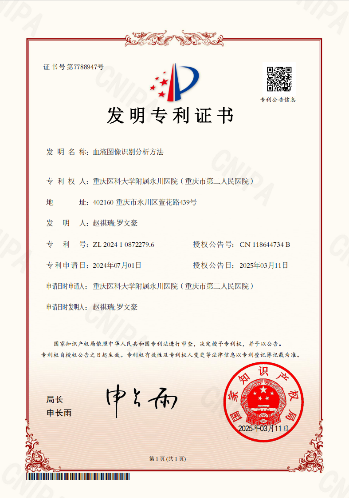
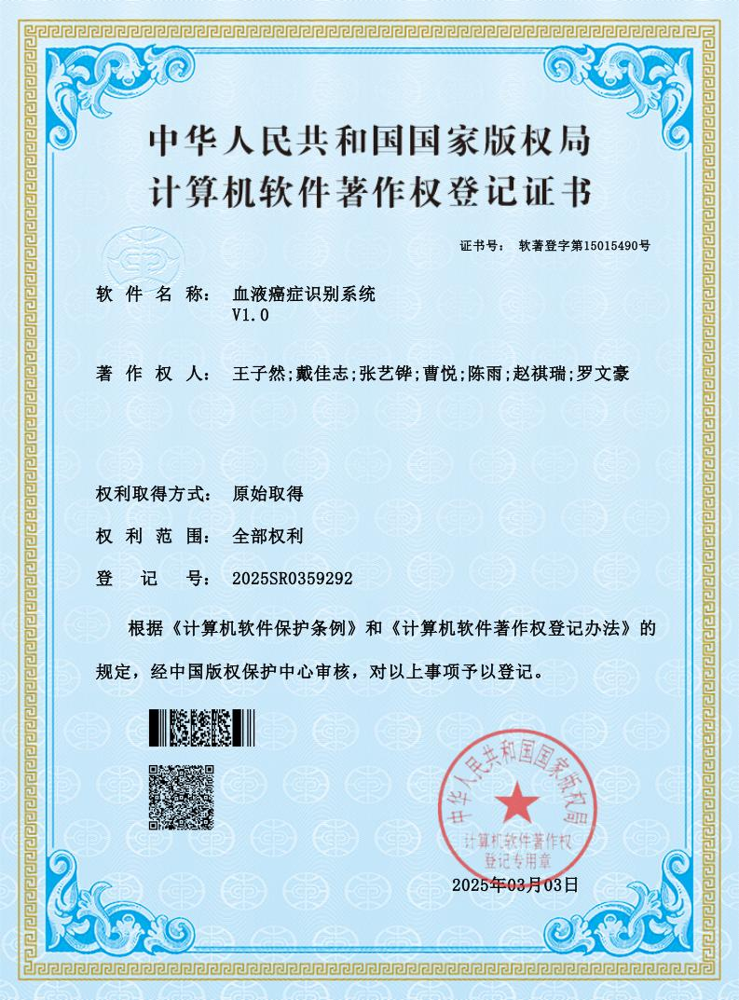
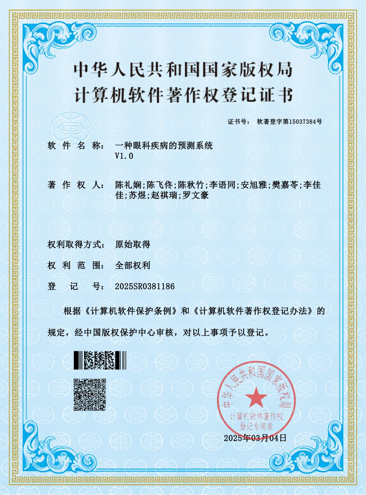

教育背景
实习经历
项目经历


技能体系
荣誉、成果与证书
发表成果
-
期刊录用: IEEE Transactions on Medical Imaging (TMI)
论文 "Blood Diseases Image Classification with Machine Learning" 被接收。
 查看录用通知
查看录用通知
专利与软著
-
发明专利: 血液图像识别分析方法 (图像识别领域)
专利号: ZL 2024 1 0872279.6 | 授权公告号: CN 118644734 B | 授权公告日: 2025年03月11日
 查看专利证书 -
软件著作权: 血液病症识别系统 V1.0
登记号: 2025SR0359292 | 证书号: 软著登字第15015490号
 查看软著证书 -
软件著作权: 一种眼科疾病的预测系统 V1.0
登记号: 2025SR0381186 | 证书号: 软著登字第15037384号
 查看软著证书
技术与语言认证
团队与管理
- 担任多个项目团队组长，负责项目协调与管理。
- 具备较强的团队合作和沟通协调能力。